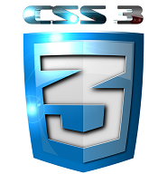

OBJETIVO DE ESTE OVI
Construir un objetivo virtual de información O.V.I, como herramienta interactiva de consulta para los estudiantes UNAD del curso 301122 Diseños de Sitios Web, profundizando en la temática HTML5 y CSS3.
Esta herramienta busca que los estudiantes puedan acceder de forma rápida y dinámica a la información de la temática tratada

OBJETIVO DEL CURSO DISEÑOS DE SITIOS WEB
Este curso pertenece al programa de Ingeniería de Sistemas de la UNAD y hace parte del componente electivo de este programa. El curso nos ofrece una iniciación básica en el campo del diseño web utilizando sistemas de control de versiones como GIT y la comunidad en línea GITHUB con su cliente para escritorio. Además se utilizaran los lenguajes de diseño web HTML5 y CSS3.